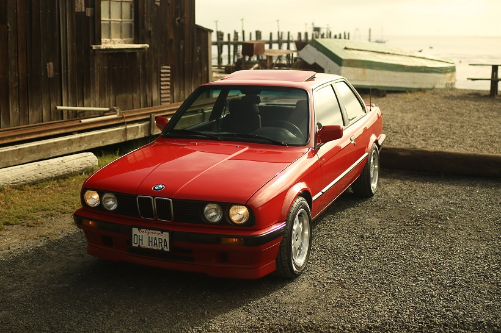
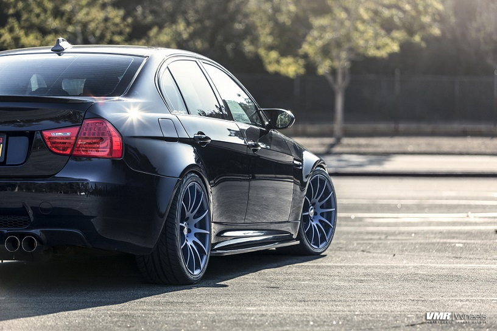

BMW 3 series
The BMW 3 Series is an entry-level luxury car manufactured by the German automaker BMW since May 1975. It is the successor to the 02 Series and has been produced in six different generations. The first generation of the 3 Series was only available as a 2-door sedan, however the model range has since expanded to include a 4-door sedan, 2-door convertible, 2-door coupé, 5-door station wagon and 5-door hatchback body styles. Since 2013, the coupé and convertible models have been marketed as the 4 Series, therefore the 3 Series range no longer includes these body styles. The 3 Series is BMW's best-selling model, accounting for around 30% of the BMW brand's annual total sales (excluding motorbikes). The BMW 3 Series has won numerous awards throughout its history.
e 21 (1975-1983)
The E21 replaced the 02 Series and was initially available as a 2-door sedan (also described as coupe). At launch, all models used carburetted 4-cylinder engines, however fuel injected models were introduced in late 1975 and 6-cylinder engines were added in 1977. A cabriolet body style – manufactured by Baur – was available from 1978 to 1981.
e 30 (1982-1994)
Initially, the E30 was produced solely in the two-door sedan body style. Four-door sedan models were introduced in 1983, convertibles were introduced in 1985 and estate ("Touring") models were introduced in 1987. The E30 was the first 3 Series to be available in wagon and four-door sedan body styles. It was also the first 3 Series to offer a diesel engine, and all-wheel drive was introduced to the 3 Series range with the 325iX model.
e 36 (1990-2000)
The E36 was sold in the following body styles: saloon, coupé, convertible, wagon (marketed as "Touring") and hatchback (marketed as "3 Series Compact"). The E36 was the first 3 Series to be offered in a hatchback body style. It was also the first 3 Series to be available with a 6-speed manual transmission (in the 1996 M3), a 5-speed automatic transmission and a four-cylinder diesel engine.
e 46 (1998-2006)
The E46 was sold in the following body styles: sedan, coupé, convertible, wagon (marketed as "Touring") and hatchback (marketed as"3 Series Compact. The E46 generation introduced various electronic features to the 3 Series, including satellite navigation, electronic brake-force distribution, rain-sensing wipers and LED tail-lights. All-wheel drive, last available in the E30 3 Series, was reintroduced for the E46.
e 90 (2004-2013)
The fifth generation 3 Series was produced in the sedan, wagon, coupé and cabriolet body styles. Due to the separate model codes for each body style, the term "E9X" is sometimes used to describe this generation of the 3 Series. In 2006, the 335i became the first 3 Series model to be sold with a turbocharged petrol engine. The E90 also saw the introduction of run-flat tires to the 3 Series range. Consequently, cars with run-flats are not equipped with a spare tire.
f 30 (2011-present)
The F30/F31/F34 has been produced in the sedan, station wagon and 5-door fastback ("Gran Turismo") body styles. A long wheelbase sedan is also available in China. For the F30/F31 series, the coupe and convertible models were split from the 3 Series and sold as the BMW 4 Series. There are two additional 5-door body styles: a taller fastback marketed as the 3 Series Gran Turismo (F34), and a lower to the ground liftback called the 4 Series Gran Coupe (F36).